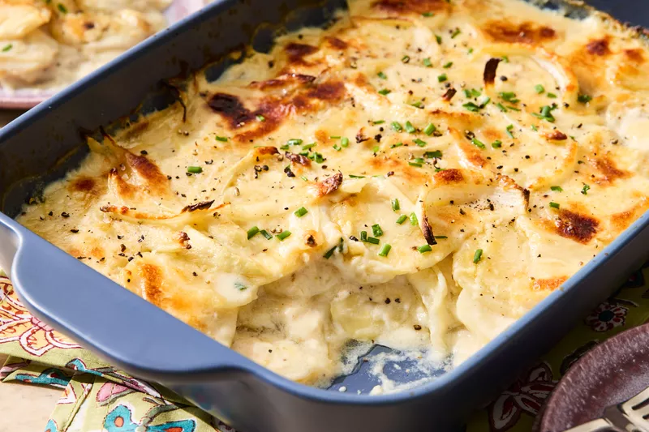

Lasagna

Description
Lasagna is a type of pasta that is made with wide, flat sheets of pasta. It is typically layered with meat, cheese, and tomato sauce.
It is a popular dish in Italian cuisine and is often served as a main course.
Ingredients
- Lasagna noodles
- Ground beef
- Ricotta cheese
- Shredded mozzarella cheese
- Parmesan cheese
- Tomato sauce
- Garlic
- Onion
- Olive oil
- Salt and pepper
Step
- Preheat the oven to 375°F (190°C).
- Cook the lasagna noodles according to package instructions.
- In a skillet, heat olive oil over medium heat. Add chopped onion and garlic, and sauté until softened.
- Add ground beef to the skillet and cook until browned. Drain excess fat.
- Add tomato sauce to the skillet and simmer for 10 minutes.
- In a separate bowl, mix ricotta cheese with salt, pepper, and half of the Parmesan cheese.
- In a baking dish, layer noodles, meat sauce, ricotta mixture, and mozzarella cheese. Repeat layers.
- Top with remaining mozzarella and Parmesan cheese.
- Bake for 30-40 minutes or until cheese is bubbly and golden brown.
Home